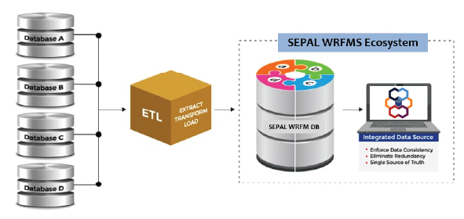

SEPAL WRFMS Solution, a business intelligent tool for managing wells, reservoirs, and facilities with structured workflows for cross-functional integration of interpretations, easy data retrieval, rich analytics, and near real time production optimisation opportunity screening.
Repository for Validated Well, Reservoir, and Facility Data
SEPAL WRFM provides a single-source-of-truth repository for up-to-date wells, reservoirs, and facilities data validated by asset data custodians and democratised to all stakeholders. This helps to:
- Eliminate information asymmetry and enhance the efficiency of asset teams by democratising validated data.
- Ensure more representative models and accurate analysis by eliminating errors due to the use of wrong or outdated data.
- Improve the success probability of well intervention and workover jobs by using up to date and validated information for reviews and planning.
- Identify data gaps and ensure data currency management.
